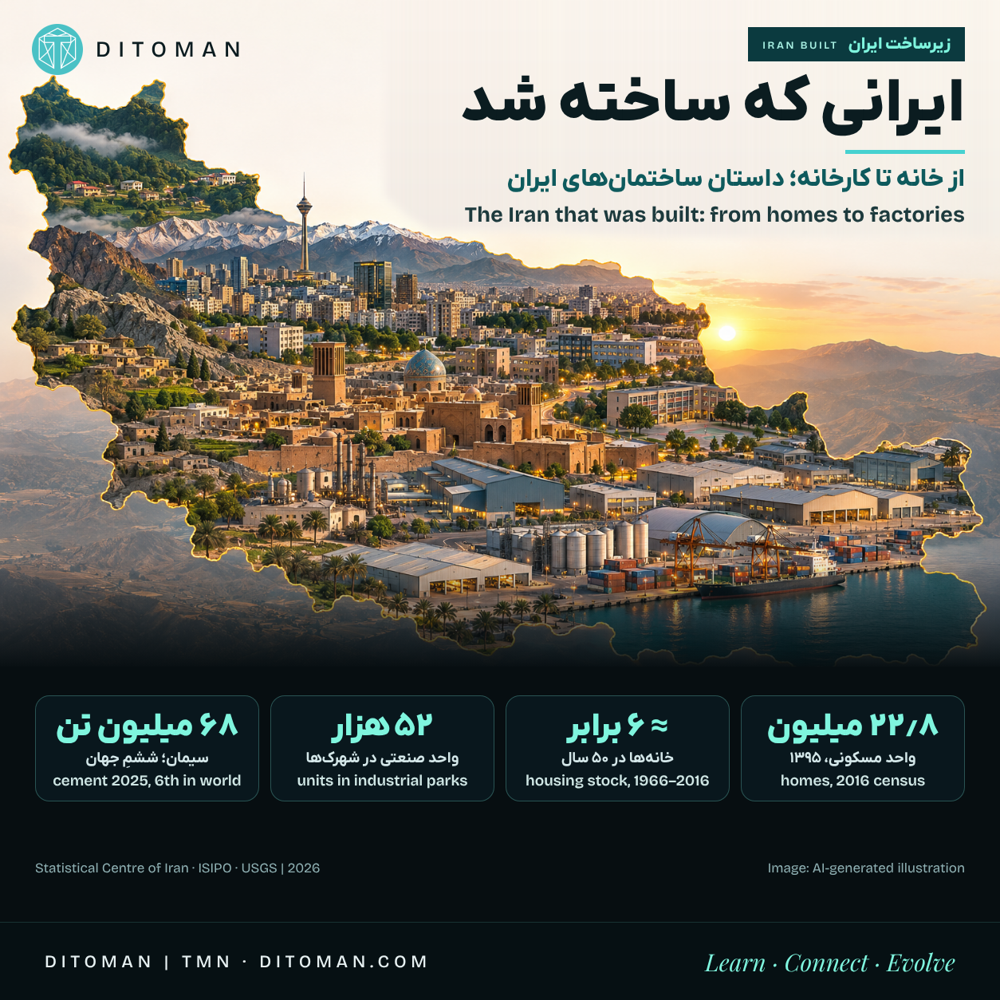
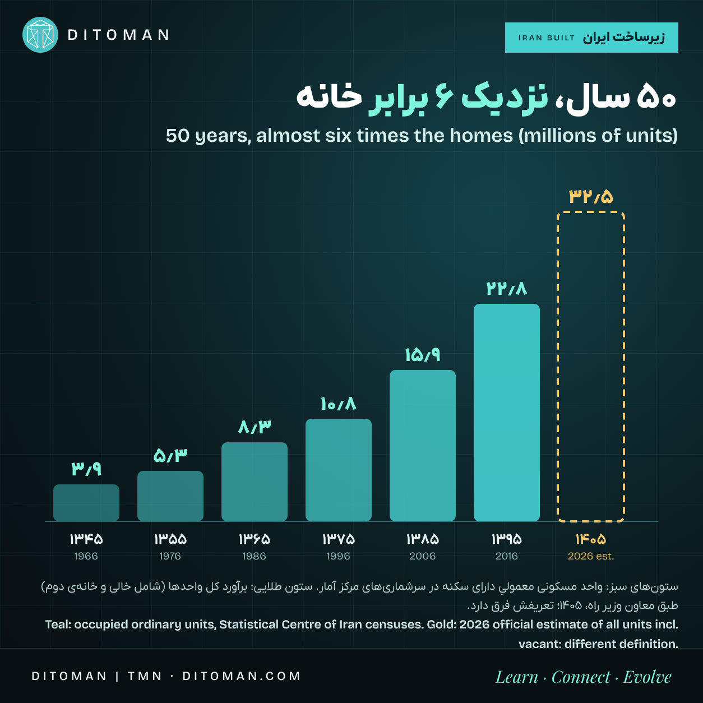
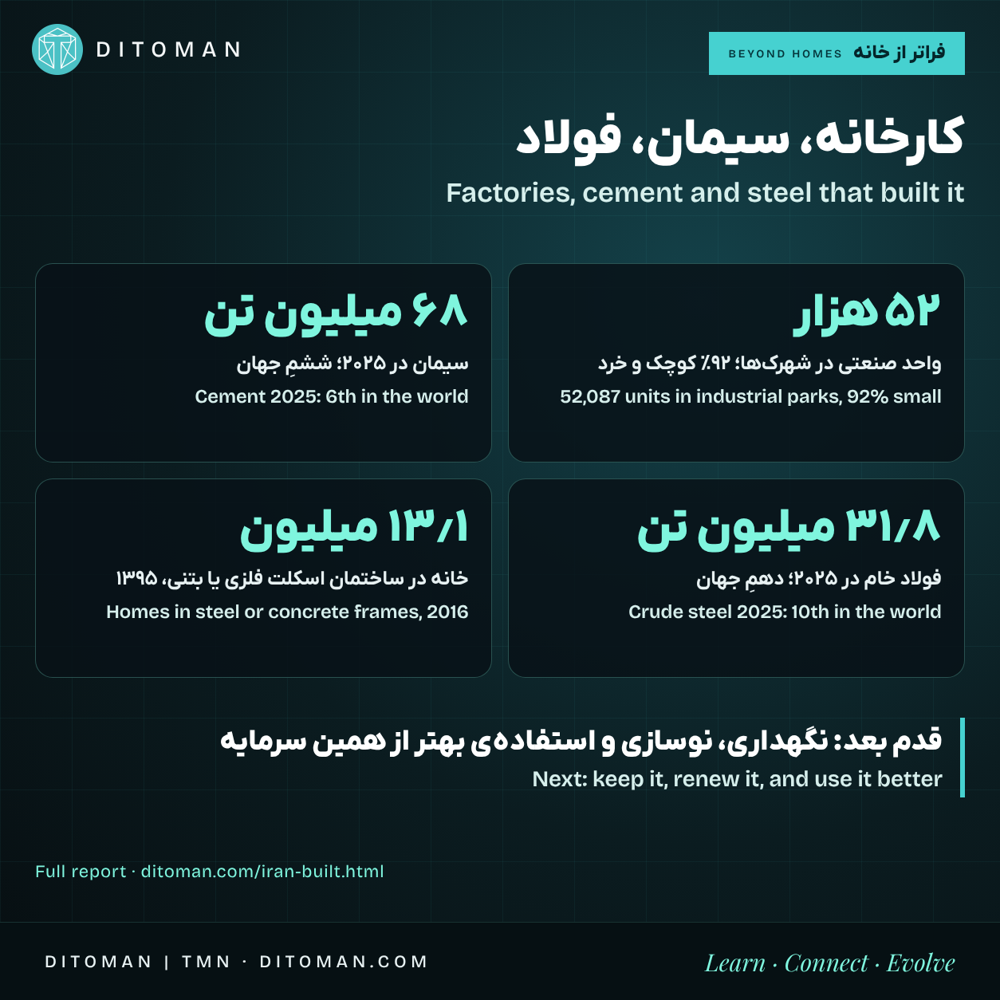

ایرانی که ساخته شد؛ از خانه تا کارخانه
The Iran that was built: from homes to factories
How much living, working and production space has Iran built in fifty years? Homes, factories, cement and steel, with a source for every number.
ایران در پنجاه سال چقدر فضا برای زندگی، کار و تولید ساخته است؟ خانه، کارخانه، سیمان و فولاد؛ با منبع برای هر عدد.
هر خانه، مغازه، مدرسه، کارخانه و انباری که امروز در ایران میبینیم، حاصل سالها کار مهندسان، معماران، کارگران ساختمانی، تولیدکنندگان مصالح، نصابها و میلیونها خانوادهای است که برای ساختن یا خریدن یک سقف پسانداز کردهاند. این گزارش با عدد به این پرسش نگاه میکند: ایران در ۵۰ سال گذشته چه حجمی از فضای زندگی، کار و تولید ساخته است؟
از خانه شروع میکنیم؛ بعد دوربین عقب میرود و کارخانهها، شهرکها، مصالح و شهر را نشان میدهد. هر جا عددی قطعی نبود، همین را صریح گفتهایم.
۰۱. خانه: نزدیک ۶ برابر در ۵۰ سال
سرشماریهای مرکز آمار ایران تعداد «واحدهای مسکونی معمولیِ دارای سکنه» را از ۱۳۴۵ ثبت کردهاند. چون تعریف در این جدول یکسان است، میشود مسیر را دنبال کرد:
| سرشماری | واحد مسکونی معمولی |
|---|---|
| ۱۳۴۵ | ۳٫۹۰ میلیون |
| ۱۳۵۵ | ۵٫۳۱ میلیون |
| ۱۳۶۵ | ۸٫۲۹ میلیون |
| ۱۳۷۵ | ۱۰٫۷۷ میلیون |
| ۱۳۸۵ | ۱۵٫۸۶ میلیون |
| ۱۳۹۵ | ۲۲٫۸۳ میلیون |

- از ۱۳۴۵ تا ۱۳۹۵ موجودی خانهها حدود ۵٫۹ برابر شد؛ فقط در ۲۰ سالِ ۱۳۷۵ تا ۱۳۹۵، ۲٫۱ برابر.
- در ۱۳۹۵ حدود ۲۴٫۲ میلیون خانوار در کشور بود.
- کیفیت ساخت هم عوض شد: تعداد خانههایی که در ساختمانهای اسکلت فلزی یا بتنآرمه قرار دارند، از حدود ۸٫۸ میلیون در ۱۳۹۰ به حدود ۱۳٫۱ میلیون در ۱۳۹۵ رسید.
- اینها افزایش «موجودی» است؛ تعداد واحدهایی که در این سالها ساخته شده بیشتر است، چون بخشی از بناهای قدیمی تخریب و نوسازی شدهاند.
عدد ۱۴۰۵. حبیبالله طاهرخانی، معاون مسکن و ساختمان وزارت راه و شهرسازی، مرداد ۱۴۰۵ کل واحدهای مسکونی کشور را حدود ۳۲٫۵ میلیون اعلام کرد و حدود ۲٫۵ میلیون واحد را خالی دانست که به گفتهی او بیشترشان خانهی دوماند. این عدد همهی واحدها، از جمله خالی و دوم، را میشمارد و نباید مستقیم با ستونهای سرشماری مقایسه شود.
۰۲. کارخانهها و شهرکهای صنعتی
طبق آمار سازمان صنایع کوچک و شهرکهای صنعتی ایران (به نقل خبرگزاری مهر، شهریور ۱۴۰۴):
- ۵۲٬۰۸۷ واحد صنعتی در شهرکها و نواحی صنعتی به بهرهبرداری رسیدهاند؛ حدود ۴۵٬۵۰۰ فعال و حدود ۶٬۶۰۰ غیرفعال.
- ۴۸٬۱۲۴ واحد (۹۲٪) کوچک و خرد، ۳٬۰۶۴ متوسط و ۸۹۹ بزرگاند؛ یعنی ستون این شبکه کسبوکارهای کوچکاند.
- این عدد فقط شهرکها و نواحی صنعتی را میشمارد، نه همهی کارخانهها و کارگاههای کشور را؛ و هر واحد ممکن است چند سوله، ساختمان و انبار داشته باشد.
- واحد غیرفعال هم سوله، تأسیسات و زمینی آماده است؛ ظرفیتی که میتواند دوباره روشن شود.
۰۳. مصالحی که ایران را ساخت
- سیمان: ایران در ۲۰۲۵ حدود ۶۸ میلیون تن سیمان تولید کرد (۲۰۲۴: ۷۱ میلیون تن) و طبق سازمان زمینشناسی آمریکا (USGS) ششمین تولیدکنندهی جهان بود؛ ظرفیت کلینکر کشور حدود ۸۵ میلیون تن در سال است.
- فولاد: تولید فولاد خام ایران در ۲۰۲۵ حدود ۳۱٫۸ میلیون تن بود و طبق انجمن جهانی فولاد (worldsteel) در رتبهی دهم جهان قرار گرفت. در پنج ماه نخست ۲۰۲۵ ایران حتی نهم بود.

۰۴. ساختن ادامه دارد
طبق سالنامهی آماری مرکز آمار، در مناطق شهری ۱۳۹۹، حدود ۱۷۴ هزار پروانهی ساختمانی با حدود ۹۳٫۶ میلیون مترمربع زیربنا صادر شد (۱۳۹۵: ۱۱۸ هزار پروانه و ۶۲٫۳ میلیون مترمربع). پروانه یعنی برنامهی ساخت، نه ساختمان تمامشده؛ اما نشان میدهد چرخ ساخت میچرخد.
۰۵. مغازه، انبار، مدرسه، بیمارستان
این بخشها هم بخشی از محیط ساختهشدهاند، ولی آمار سراسریشان پراکنده است:
- واحدهای صنفی: اتاق اصناف ایران از بیش از ۳ میلیون واحد صنفی گفته و یک مقام وزارت اقتصاد در ۱۴۰۳ از حدود ۲ میلیون واحد دارای پروانه. «واحد صنفی» یک فعالیت است، نه یک ساختمان.
- انبارها: در ۱۳۹۷ وزارت صمت از شناسایی بیش از ۳۰۰ هزار انبار صنفی، ۴۹ هزار صنعتی، ۸۳ هزار کشاورزی، ۸ هزار معدنی و ۴۱ هزار محل دپوی کالا خبر داد.
- مدرسه و بیمارستان: طبق گزارشها، بیش از ۱۰۰ هزار مدرسه (پژوهش اولیهی ما از حدود ۱۲۵ هزار مدرسهی فعال در ۱۴۰۵ میگوید) و بیش از ۱٬۱۰۰ بیمارستان در کشور فعال است.
این چهار رقم را از گزارشهای خبری مقامها داریم و هنوز متن اصلیشان را خودمان باز نکردهایم؛ بهمحض تأیید، دقیقش را اینجا میگذاریم.
۰۶. چرا هنوز رتبه نمیدهیم؟
کشورها ساختمان را یکسان نمیشمارند. ادارهی آمار پاکستان در سرشماری ۲۰۲۳ حدود ۳۸٫۳ میلیون سازه شمرد که حدود ۳۰٫۴ میلیونشان سازهی مسکونی معمولی (غیربلندمرتبه) بودند. ایران «واحد مسکونی» میشمارد: یک برج ۱۰۰ واحدی در آمار ایران ۱۰۰ واحد است و در آمار سازه یک ساختمان. برای رتبهبندی درست به جدولی نیاز داریم که در همهی کشورها با تعریف و سال نزدیک، ساختمانهای مسکونی، تجاری، اداری، صنعتی، عمومی، مساحت و کیفیت را بشمارد. تا آن موقع، ابعاد را نشان میدهیم، نه رتبه را.
۰۷. نگاه دیتومان
ایران سرمایهی ساختهشدهی عظیمی دارد که حاصل کار چند نسل است. فصل بعد، فقط ساختنِ بیشتر نیست؛ نگهداری، نوسازی، مقاومسازی و استفادهی بهتر از همین سرمایه است: خانههای امنتر و کممصرفتر، کارخانههایی که دوباره روشن میشوند، خانههای خالی که به بازار برمیگردند و شهرهایی که بهتر کار میکنند. دیتومان این مسیر را با شما دنبال میکند و هر بخش را با عدد تازه کامل میکند.
منابع
- مرکز آمار ایران، سالنامهی آماری ۱۳۹۹، فصل ۱۰ (مسکن و ساختمان): جدول واحدهای مسکونی سرشماریها، نوع اسکلت، پروانههای ساختمانی • amar.org.ir
- مرکز آمار ایران، نتایج منتخب سرشماری ۱۳۹۵ (خانوارها)
- اظهارات حبیبالله طاهرخانی، معاون وزیر راه و شهرسازی، ۳۰ مرداد ۱۴۰۵ (به نقل رسانهها)
- سازمان صنایع کوچک و شهرکهای صنعتی ایران، به نقل خبرگزاری مهر، ۳۰ شهریور ۱۴۰۴ • mehrnews.com
- USGS Mineral Commodity Summaries 2026: Cement • pubs.usgs.gov
- worldsteel: Global crude steel production 2025 (ژانویه ۲۰۲۶) • worldsteel.org
- Pakistan Bureau of Statistics, Census 2023, Table 26 • pbs.gov.pk
- گزارشهای خبری دربارهی واحدهای صنفی، انبارها، مدارس و بیمارستانها (تأیید از منبع اصلی در جریان است)
تصویر کاور: تصویرسازی با هوش مصنوعی. آخرین بازبینی: ۱۷ آبان ۱۴۰۵